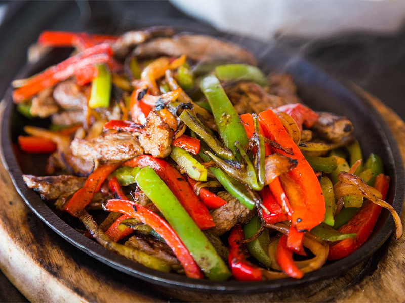

Adrian's Chicken Fajita Recipe
Where do fajitas come from?
Fajitas originate from Rio Grande Valley of South Texas and northern Mexico where they were used as a form of payment and overr time spanish cowboys became skilled at marinating the meat in different forms.They started to gain popularity in the 70s as restaurants started making more and more of them.
How to make steak fajitas
Ingredients
- 2 pounds skirt steak
- 1 red pepper, deseeded and sliced into thin strips
- 1 bell pepper, deseeded and sliced into thin strips
- 1 onion, peeled and sliced into thin strips
- 3 tablespoon olive oil
- 1 tablespoon lime juice
- 1/2 teaspoon chili powder
- 1 teaspoon ground cumin
- A pinch of cayenne pepper
- 1/2 teaspoon salt
- 1/2 teaspoon ground black pepper
- 2 cloves garlic, minced
- 6-8 tortillas

Recipe Instructions
- Place steak into sealable bag
- PLace the peppers and onion into a separate sealable bag
- Add the olive oil, lime juice, chili powder, ground cumin, cayenne pepper, salt, black pepper, and garlic to a jar with a tight lid.Shake until well combined.
- Pour 1/3 of the marinade over the steak, 1/3 over the vegetables, and the remaining in the jar for when the steak is being cooked.
- Seal everything and refrigerate for one hour to overnight.
- When ready to cook, heat a large skillet over medium to high heat.
- Pour the vegetables into the skillet and cook intil tender crisp, about 5 minutes.
- Remove the vegetables and add steak strips in the same skillet.
- When the steak is cooked throughout, about 7-10 minutes
- Add the vegetables back to the skillet alongside the remaining marinade.
- Serve with warm tortillas and other garnishes.